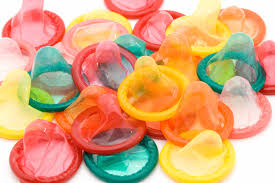
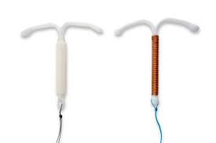

| Condón masculino |
Funda de látex o poliuretano que se coloca en el pene erecto. |
 |
| Píldoras anticonceptivas |
Pastillas que contienen hormonas (estrógeno y progestina, o solo progestina) que se toman diariamente. |
|
| Vasectomía |
Procedimiento quirúrgico para cortar o bloquear los conductos deferentes en los hombres. |
|
| DIU de cobre |
Puede ser insertado hasta cinco días después de la relación sexual sin protección para prevenir el embarazo. |
 |
| Píldora del día después |
Pastillas que se pueden tomar después de una relación sexual sin protección para prevenir el embarazo. |
 |